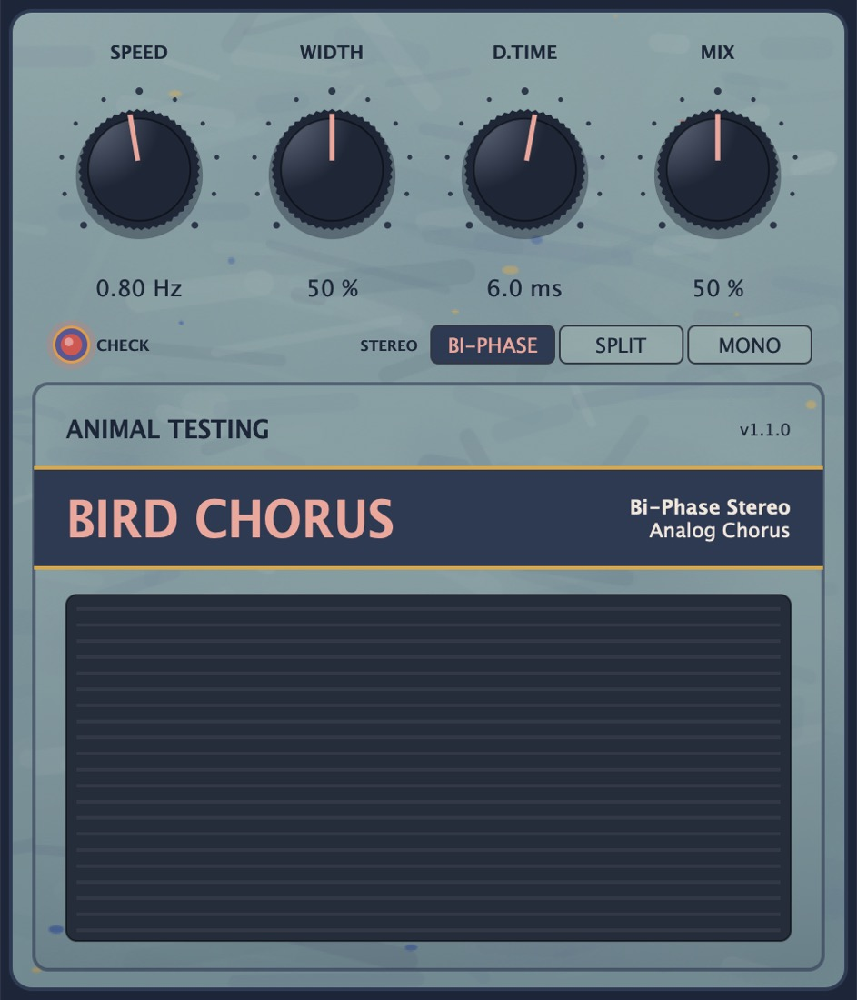

Bird Chorus
Modelled on the Ibanez SC10 Super Stereo Chorus. Inspired by Blue Smiley.
A mid-80s analog stereo chorus. Its 1024-stage bucket brigade is run the way the chip runs it, sampled at its own swept clock rather than read from a moving tap. That's where the slightly seasick wobble comes from.
- Version
- 1.1.0
- Processing
- 4x oversampled
- Formats
- VST3 · AU · Standalone
Controls
6 parameters| Control | Range | Default | What it does |
|---|---|---|---|
| Speed | 0.1 to 10 Hz | 0.8 Hz | Rate of the triangle LFO that sweeps the clock. |
| Width | 0 to 100% | 50% | How far the sweep goes. |
| Delay Time | 2 to 15 ms | 6 ms | The centre delay through the bucket brigade. |
| Mix | 0 to 100% | 50% | Dry against wet. The original pedal didn't have one. |
| Stereo | Bi-Phase, Dry/Wet Split, Mono-Safe | Bi-Phase | Bi-Phase is the original's output: one side dry plus wet, the other dry with the wet inverted. Split puts dry on one side and wet on the other. Mono-Safe sends dry plus wet to both, so nothing cancels when summed to mono. |
| Bypass | On / Off | Off | The footswitch. |
How it works
Each clock tick samples the input into the first bucket and passes every charge one step along. A sample comes out 512 ticks later and is held until the next tick. The LFO sweeps the clock, so the pitch wobble falls out of the buckets being filled at one rate and emptied at another, as it does in the pedal.
The sweep is lopsided: the delay stretches further on the slow half of the clock swing than it shrinks on the fast half. At long delays the clock drops into the mid 20 kHz range, and what gets past the input filter folds back down as faint grit.
Signal path
- Input filter
- Soft clip and hiss
- Bucket brigade1024 stages at its own clock.
- Reconstruction filters
- Coupling capacitorThe only stage not oversampled.